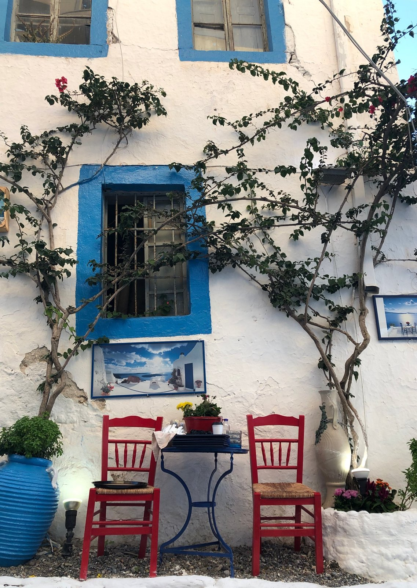
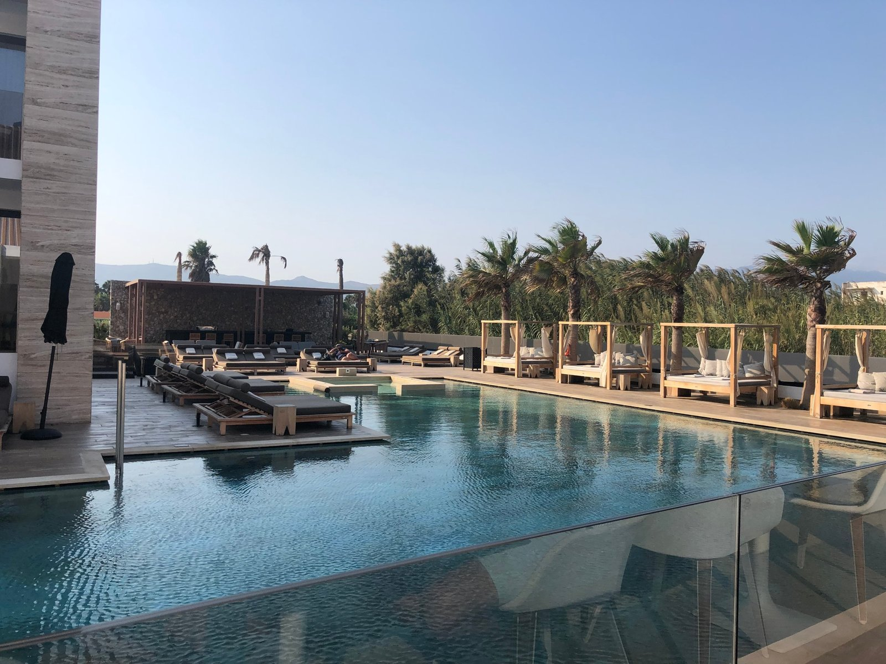
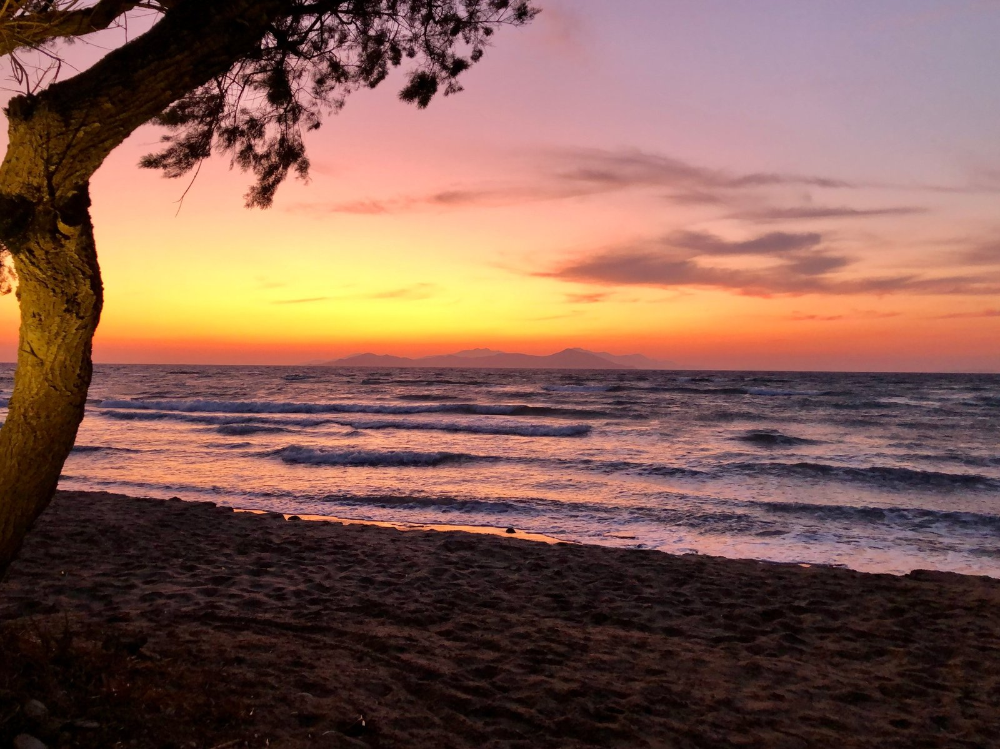
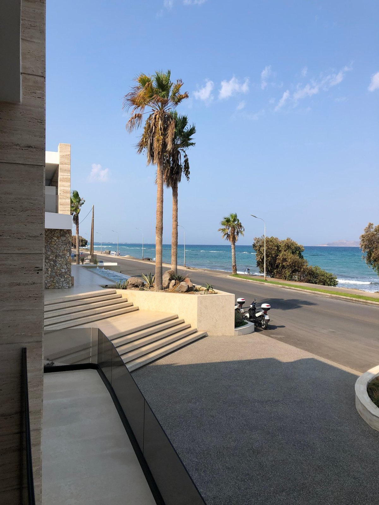
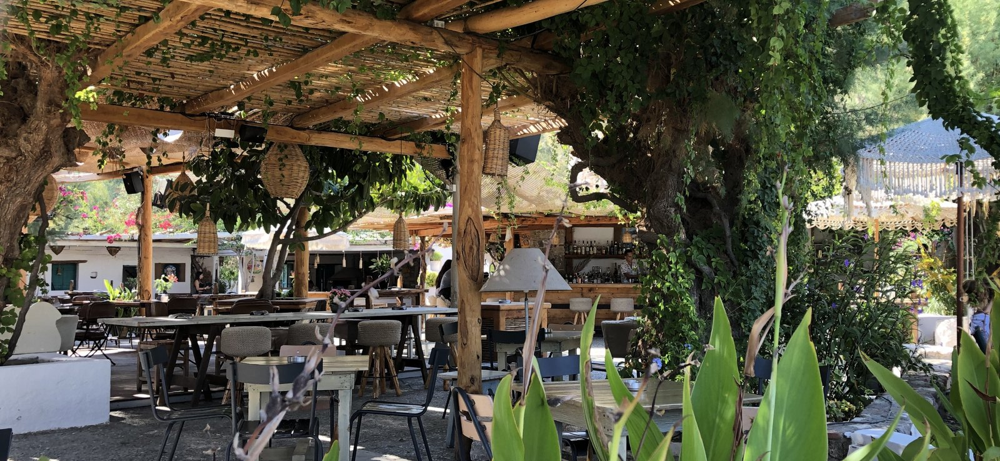
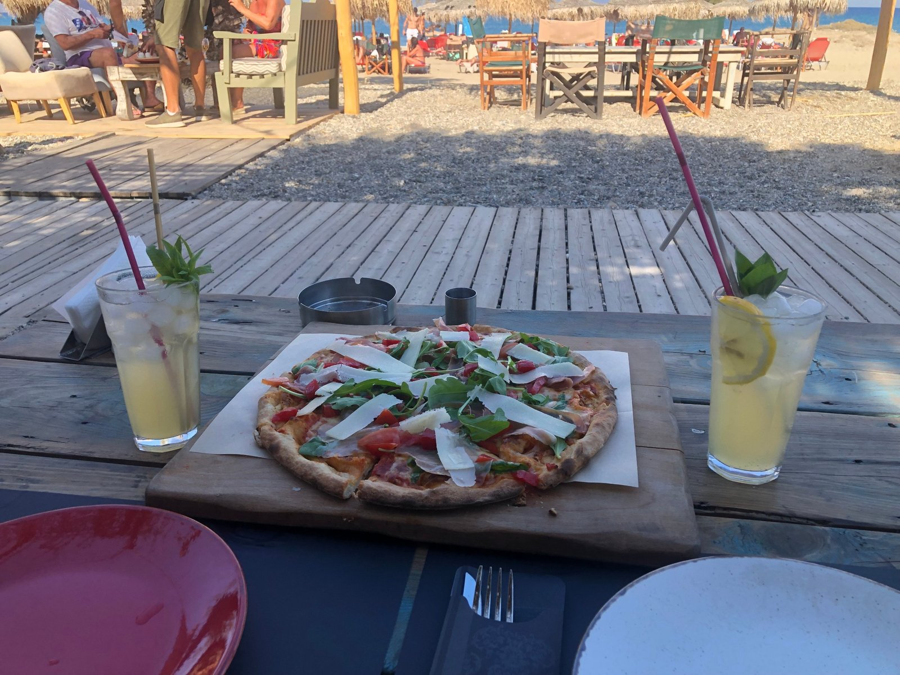
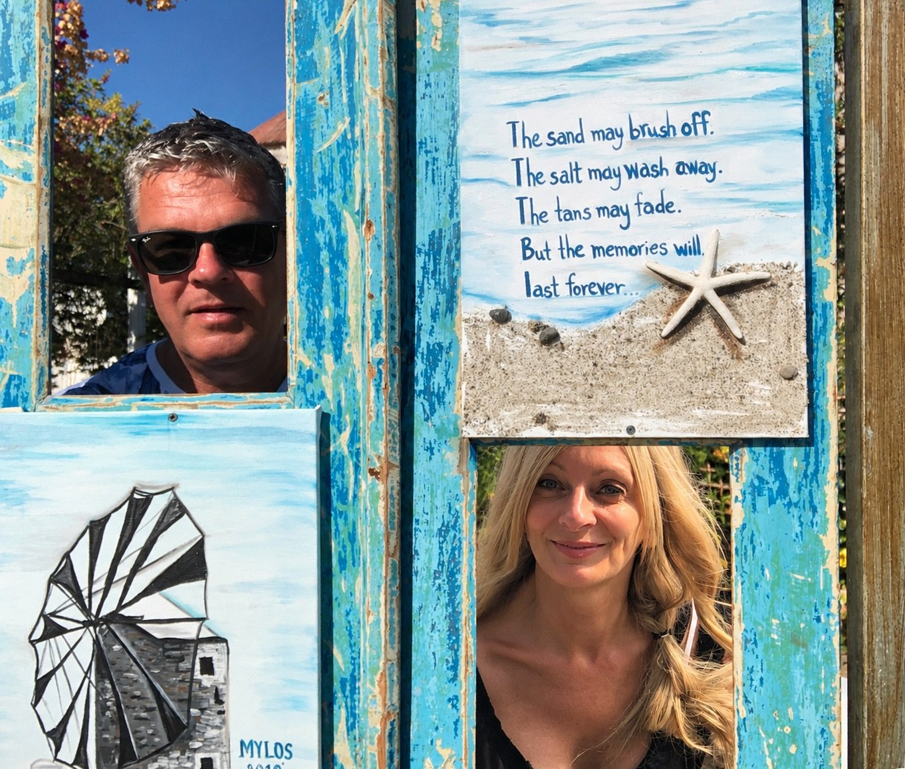
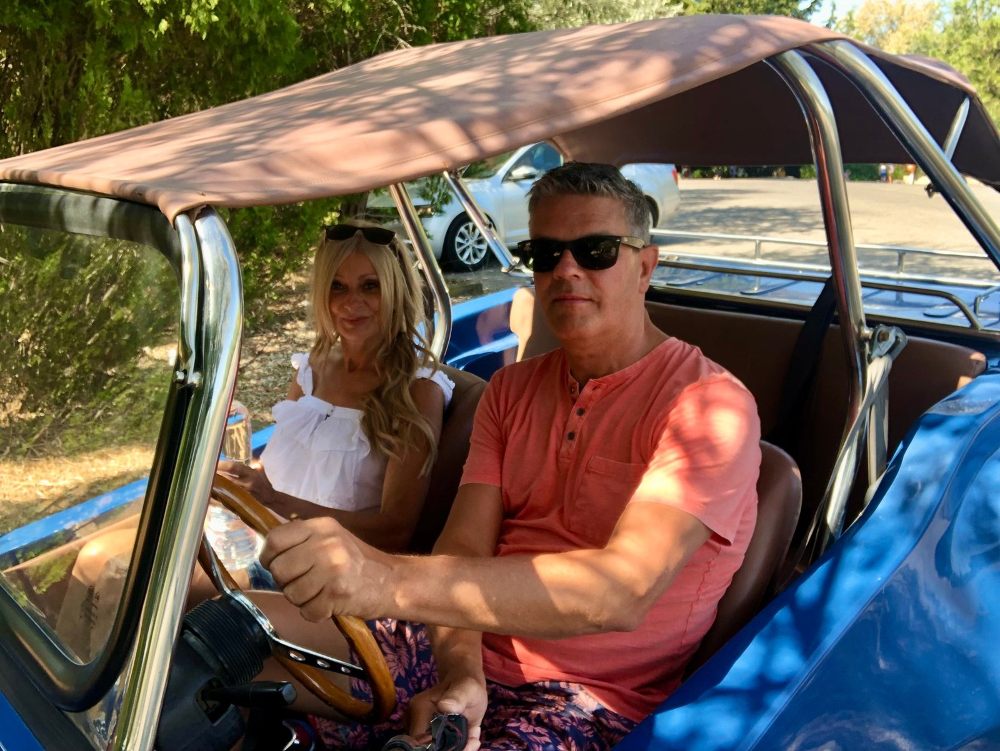
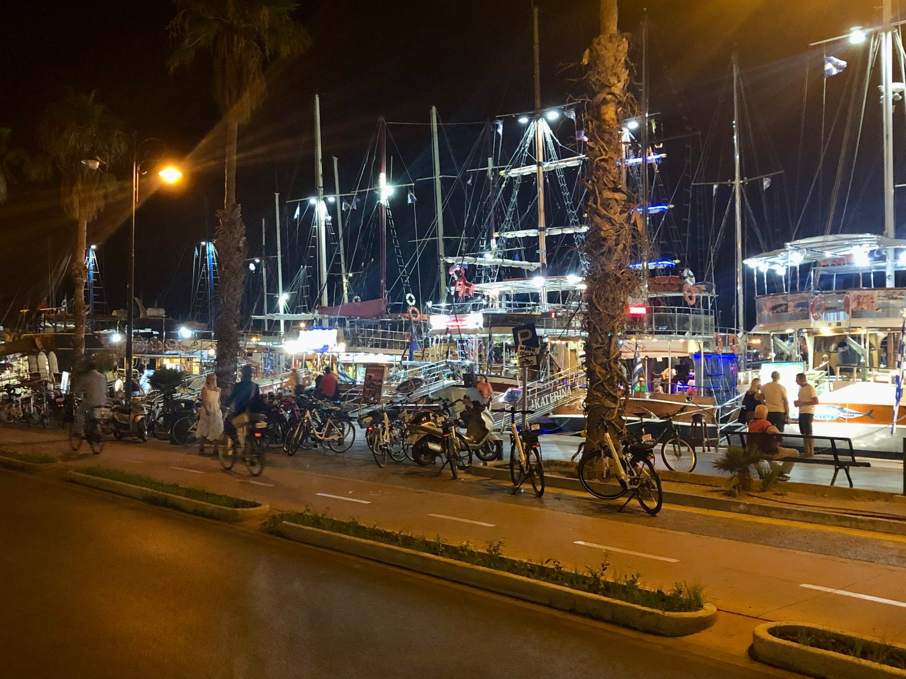

FIRST IMPRESSIONS – WELCOME TO KOS
Kos is one of those Greek islands that seems to have a little bit of everything. Beautiful sandy beaches, turquoise water, lively beach bars, traditional villages, ancient history and enough shops to keep even the most enthusiastic holiday shopper occupied for days.
We arrived with ten days to enjoy it, which at the time felt like a perfectly reasonable amount of holiday. Unfortunately, we weren't retired then, and our annual holiday allowance was still dictating the length of our adventures. There were jobs to return to, responsibilities to remember and, rather annoyingly, only so many days we could disappear for.
We hired a car, checked into our rather lovely hotel on Lambi Beach and set about exploring. Well, exploring as much as you can when the swimming pool, beach and a comfortable sun lounger are constantly trying to distract you.
WHAT IS KOS LIKE?
Situated in the Dodecanese island group in the southeastern Aegean Sea, Kos is one of Greece's most popular holiday destinations. It's a relatively large island, with around 112 kilometres of coastline, so there's plenty of opportunity to find your own favourite stretch of sand.
Unlike some of the Greek islands where you spend half your holiday negotiating hairpin bends and mountain roads, Kos is relatively easy to explore. Much of the island is fairly flat, making it particularly popular with cyclists, and the roads connect the main resorts, villages and beaches without too much difficulty.
Kos Town is the island's main hub, with a beautiful harbour, historical buildings, waterfront restaurants and a maze of shopping streets. Further along the coast you'll find lively resorts, while the southern and western parts of the island offer a more relaxed atmosphere and some particularly lovely beaches.

It's an interesting combination of traditional Greece and modern holiday life. You can spend the morning wandering around ancient ruins, the afternoon swimming in crystal-clear water and the evening enjoying cocktails beside the sea.
Not a bad way to spend a day, really.
OUR KOS ADVENTURES – BEACHES, BEACH BARS AND A SLIGHTLY QUESTIONABLE BUGGY
Lango Design Hotel & Spa
We stayed at the fabulous Lango Design Hotel & Spa, a five-star, adults-only boutique hotel right on Lambi Beach.

Our room had large patio doors opening onto a wonderful view of the beach. A few steps outside and we were practically on the sand. It was a superb location: far enough away from the hustle and bustle of Kos Town to enjoy some peace and quiet, but close enough for an evening stroll into town.

Lambi Beach itself isn't necessarily the island's most spectacular beach, but it's wonderfully convenient, with plenty of sunbeds, beach bars and watersports. And when your hotel is practically on the beach, it's difficult to complain.

Mylos Beach Bar
One of our favourite discoveries was Mylos Beach Bar. We found it on the way into Kos Town one evening and immediately loved the place. Right on the beach, with Bali-inspired interiors, plenty of shade, cool music and a wonderfully relaxed atmosphere.

We enjoyed pizza and homemade lemonade, and it quickly became one of our regular haunts. You know those places you discover on holiday and immediately decide you need to return to?

This was one of them.

Lunch above Paradise Beach
Further afield, we headed down to Paradise Beach, near Kefalos, one of the island's best-known beaches. Pale sand, beautiful clear water and a lovely setting make it easy to understand its popularity, but our highlight wasn't actually the beach. It was the restaurant we discovered overlooking it.
We found a little restaurant perched above the beach, with a fantastic view. We were the only customers, which made the experience even better. The hosts were wonderfully attentive and the food was superb. I had the most fabulous octopus salad, and we spent several leisurely hours enjoying lunch, a few beers and some wine.
It was one of those unexpectedly brilliant holiday meals that you remember long after you've returned home.
The beach buggy
Of course, we couldn't explore Kos without hiring some wheels. I had my heart set on experiencing the beach buggy lifestyle, so we hired what looked like a rather cool little beach buggy.

Unfortunately, appearances can be deceptive.
Although it looked fantastic in photographs, it sounded rather like an agricultural machine having a particularly difficult day. It was incredibly noisy, and whenever you took your foot off the accelerator, it seemed to take an eternity to wind down. By the time we'd finished our trips, we were covered in dust and wondering why we'd chosen an open-sided vehicle in the Greek sunshine.
In hindsight, a normal car with air conditioning would probably have been the sensible option, but where's the fun in that? And it did look good in the photographs.
A DAY TRIP TO TURKEY – AND AN UNEXPECTED SHOPPING EXPEDITION
One of the highlights of our holiday was taking a boat trip across to Turkey.
It was great to have a change of scenery and spend a day exploring somewhere completely different. What we hadn't quite appreciated before arriving was that we'd need some local currency.
This was before card payments had become quite so universal, so we found ourselves spending a fair amount of time searching for a bureau de change.
Eventually, we sorted ourselves out, found a lovely bar and settled down for some food and drinks.
The shopping was another surprise. There were plenty of shops selling designer-style goods, and Jacquie was certainly not going to miss that opportunity. I came away with a Breitling lookalike watch, which, rather impressively, is still going strong today.
All in all, it was a brilliant day out and a welcome break from the usual routine of sunbathing, swimming and deciding where to have lunch.
KOS BY NIGHT – SHOPPING, HARBOUR LIGHTS AND FAR TOO MANY HANDBAGS
Kos Town really comes alive in the evening.

The harbour is particularly lovely after dark, with the boats illuminated and the waterfront buzzing with activity. The excursion boats are all moored up, ready to tempt tomorrow's visitors with promises of island-hopping adventures and trips across the Aegean.
The streets behind the harbour are equally entertaining. There are boutiques, clothing shops, jewellery stores, handbags, pottery and all manner of holiday shopping temptations.
Jacquie was in her element.
Every time we turned another corner, there seemed to be another street full of shops. I lost count of the number of times we wandered off supposedly just to have a look, only to return considerably later with another shopping bag.
Shoes, clothes, handbags. Apparently, there was always something missing from the holiday wardrobe.
Whether it was actually missing is another matter.
But Kos is genuinely a lovely place to spend an evening, even if shopping isn't your particular passion. There are plenty of restaurants, bars and waterfront terraces where you can sit, watch the world go by and enjoy the atmosphere.
MORE PLACES TO EXPLORE IN KOS – WHAT WE MISSED
Ten days gave us a wonderful introduction to the island, but we certainly didn't see everything. If you're planning a longer stay, there are several other places I'd put firmly on the itinerary.
The Asklepieion
Perhaps the most important historical attraction on Kos, the Asklepieion is an ancient healing sanctuary associated with Hippocrates, the father of modern medicine. Built on a hillside overlooking the sea, this impressive archaeological site has several levels of ruins, temples and ancient terraces. It's a must for anyone interested in the island's history.
Zia Village
Perched on the slopes of Mount Dikeos, Zia is one of Kos's best-known traditional villages. It's particularly famous for its panoramic sunsets, traditional tavernas, little shops and wonderful views across the island and neighbouring Aegean islands. An evening visit would be high on our list next time.
Kefalos and Agios Stefanos Beach
At the western end of the island, Kefalos is a lovely area to explore. Nearby Agios Stefanos Beach is particularly photogenic, with the ruins of an early Christian basilica overlooking the water and the small island of Kastri sitting just offshore. It's one of those classic Greek island views that looks almost too good to be real.
Antimachia Castle
History lovers might enjoy visiting this medieval castle, built by the Knights of Saint John in the 14th century. Its impressive stone walls and remains of old settlements offer a glimpse into Kos's fascinating past.
Plaka Forest
A rather different attraction is Plaka Forest, an attractive woodland area inland, known for its peacocks roaming freely among the trees. It's a lovely change from the beaches and resorts, particularly if you fancy a little shade away from the midday sunshine.
Kos Town's historical centre
We spent plenty of time enjoying the shops and harbour, but the town has much more to offer. The Castle of Neratzia, the famous Plane Tree of Hippocrates, the Ancient Agora, Casa Romana and the Archaeological Museum are all worth exploring. You could easily spend a day discovering the island's fascinating Greek, Roman, medieval and Ottoman heritage.
PRACTICAL TIPS FOR VISITING KOS
- Getting around: Hiring a car is a great way to explore the island independently. The roads are generally straightforward, and having your own transport gives you the freedom to discover beaches and villages away from the main resorts. I'd probably recommend an air-conditioned car over a beach buggy, unless getting covered in dust is part of your holiday ambition. Read our car hire tips, then compare prices on DiscoverCars, before you book.
- Where to stay: Kos Town and Lambi are excellent bases if you enjoy restaurants, shopping and evening entertainment. Other resorts, including Kefalos, Tigaki, Marmari and Kardamaina, offer different atmospheres and access to some lovely beaches.
- When to visit: July and August are the busiest months and can be extremely hot. May, June, September and October are worth considering if you prefer slightly quieter surroundings and more comfortable sightseeing temperatures. See our guide to when to go.
- Boat trips: There are plenty of excursions available from Kos Harbour, including trips to neighbouring Greek islands and Turkey. If you're visiting another country, check passport and entry requirements beforehand, and take a suitable payment method and some local currency.
OUR VERDICT – WOULD WE RETURN TO KOS?
Absolutely.
Kos gave us everything we wanted from a Greek island holiday: beautiful beaches, lovely food, fabulous beach bars, interesting places to explore and enough evening entertainment to keep us occupied.
We particularly loved our hotel on Lambi Beach, our lazy lunch overlooking Paradise Beach and discovering Mylos Beach Bar. The boat trip to Turkey was another highlight, and even the slightly disastrous beach buggy provided a few laughs.
Would we return? Definitely. Although next time we'd probably choose to visit outside the busiest summer months, hire a sensible car with air conditioning and allow ourselves considerably more time to explore.
Back then, ten days was all work commitments would allow. These days, with retirement offering a little more freedom, we'd approach things rather differently.
Because the trouble with Kos is that once you've discovered a few of its lovely corners, you realise there's an awful lot more waiting to be explored.
And that's a rather good excuse to go back.